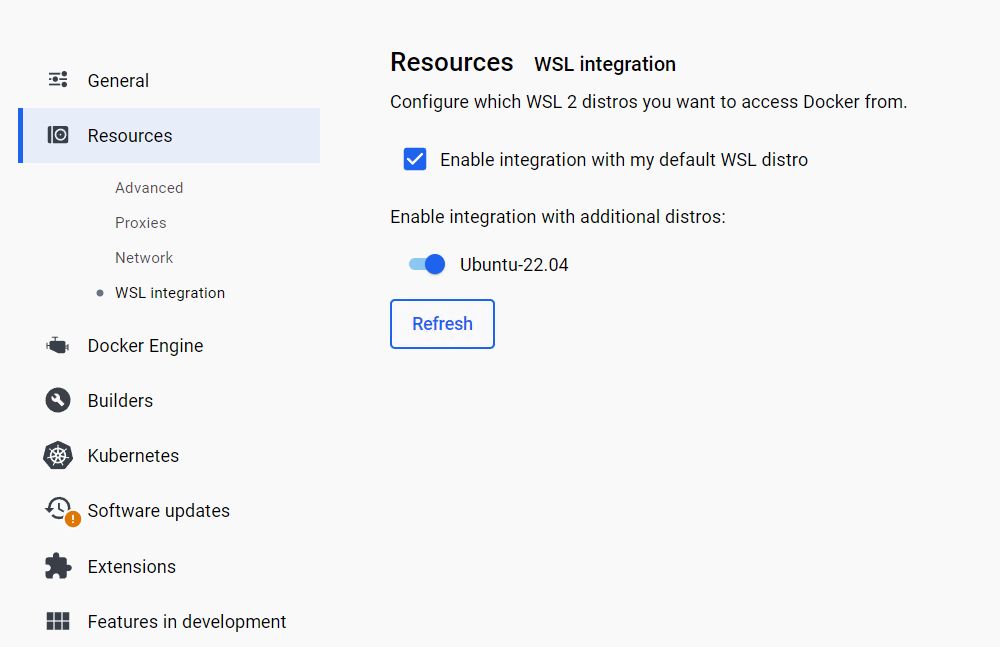
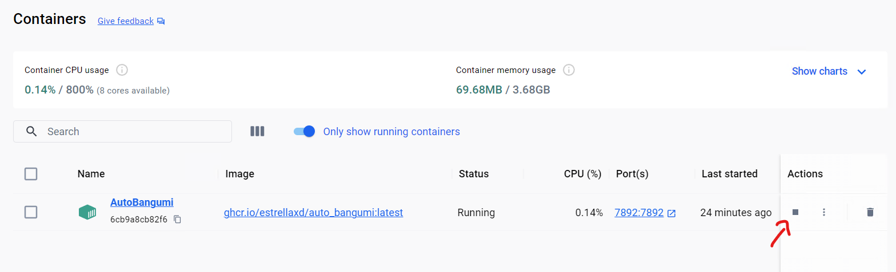
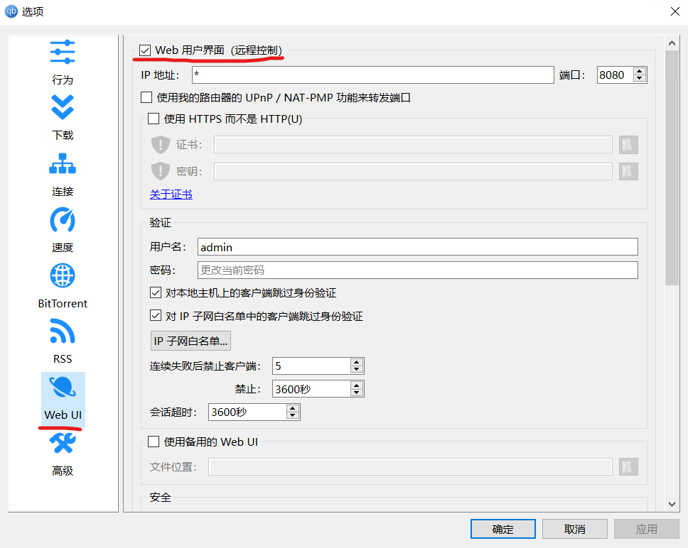
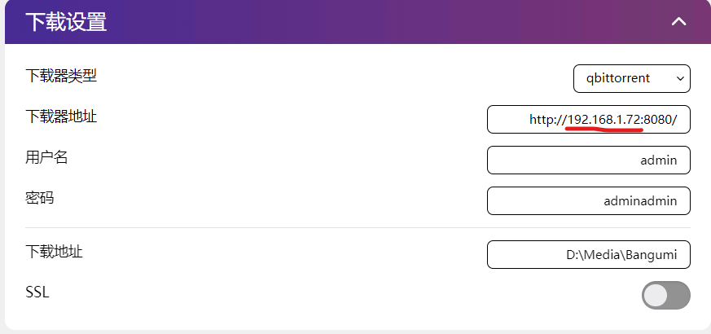

AutoBangumi Windows + Docker Desktop 部署流程
AutoBangumi Windows + Docker 部署流程
AutoBangumi 是基于 RSS 的全自动追番整理下载工具。只需要在 Mikan Project 等网站上订阅番剧，就可以全自动追番。
该教程仅为个人部署 AutoBangumi 的简要记录，仅适用于个人电脑的 Windows 系统下使用 Docker Desktop 部署，不适用于服务器。
安装 Docker Desktop
官网下载安装，注意给C盘留一定空间。
如图，Docker Desktop 最新版本可以使用 wsl2（Windows Subsystem for Linux）为引擎，并可以集成到发行版 linux 中。

部署 AutoBangumi
AutoBangumi 的官方文档：https://www.autobangumi.org/
确保 Docker Desktop 启动后，可以选择在 Windows 环境或 wsl 环境内新建以下的文件目录：
1 | |
确保运行时目录处于 AutoBangumi 后，运行以下命令：
1 | |
需要注意的是，不同 shell 的续行符不同，具体可以见这篇文章。
部署完成后，可以在 Docker Desktop 图形化界面中见到容器已经运行：

可以通过浏览器访问映射的7892端口打开 WebUI 。
配置AutoBangumi
此处可以参考官方文档进行配置，这里主要说几个注意事项：
配置下载器地址
个人选择了 Windows 下安装 qBittorent，如果选择 Docker 安装则下载配置可根据官方文档设置。
这里需要先勾选 qBittorent 中的 Web 用户界面。

接下来在 Windows 下查询主机 ip 地址，可以通过 ipconfig 命令查询，一般来说是 WLAN 下的 IPv4 地址（连接 WiFi 的情况）。
将查询到的配置填入，然后最好在 qBittorrent 中将宿主机（即刚刚查询的 ip）加入身份验证白名单。

设置完成后，WebUI 右上角功能选择处启动主程序，如果操作得当（免身份验证后），可以在下载器这一栏处看到 qBittorrent 的 WebUI。
需要说明的是，主程序启动成功代表 qBittorrent 成功连接，但下载器处不一定成功显示 UI，具体可以查看这条 Issue。
配置代理
由于不可抗力，蜜柑计划需要配置代理访问，如果是在 Windows 侧配置代理，在代理设置处需要填入宿主机的 ip，以及如果是 Clash for Windows 等代理客户端需要将 Allow LAN 选项打开（即监听局域网内的代理请求）。